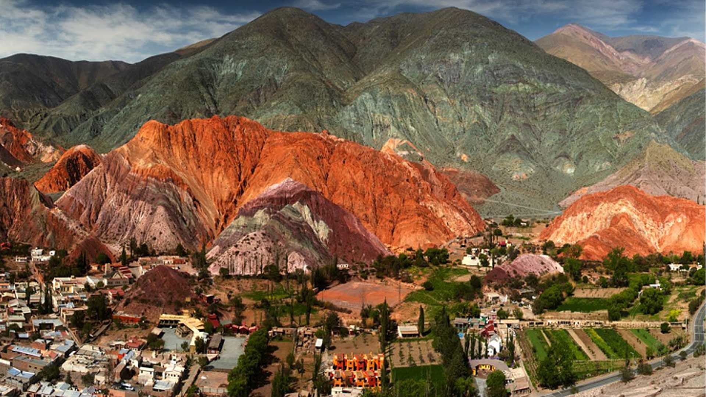

AventuraLa magia de caminar entre siete colores
Purmamarca no es solo un destino, es una experiencia que detiene el tiempo. Te contamos cómo aprovechar al máximo tu visita al cerro más famoso del país...
Leer historia completaHistorias, consejos y rincones ocultos del norte argentino.

AventuraPurmamarca no es solo un destino, es una experiencia que detiene el tiempo. Te contamos cómo aprovechar al máximo tu visita al cerro más famoso del país...
Leer historia completaEl aroma del maíz fresco y el toque justo de albahaca marcan el inicio de un viaje gastronómico inolvidable. Conocé las peñas y rincones de la Quebrada donde este tesoro dorado se cocina a fuego lento, respetando el tiempo de la montaña.
Leer historia completa
Comunidad de Viajeros
¡Increíble el diseño del blog! Las fotos de Jujuy son espectaculares, me dieron ganas de volver.
Deja tu comentario